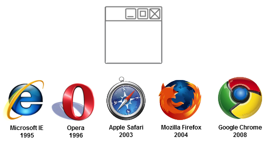

- Browsers interpret and present information on the web.
- Each browser varies in how it displays webpages.
- Layout engine: a program browsers run to render markup (HTML) and formatting (CSS).
- Most popular are WebKit (Apple), Blink (Chrome), Gecko (Mozilla) 
Browsers
Each browser varies in how it displays webpages.
Example: Default form fields.

CSS Grids
A grid system lets you layout pages according to fractions of a grid (usually 12, 16, or 24 columns).
Example: Foundation Grid System

CSS Grids
A grid system lets you layout pages according to fractions of a grid (usually 12, 16, or 24 columns).
Example: Bootstrap Grid System

CSS Grids
Example: Foundation grid with mixed classes
Using Foundation CSS Grids:
<link rel="stylesheet" type="text/css" href="https://cdnjs.cloudflare.com/ajax/libs/foundation-essential/6.0.6/css/foundation.css">
<div class="row">
<div class="small-2 large-4 columns"> ... </div>
<div class="small-4 large-4 columns"> ... </div>
<div class="small-6 large-4 columns"> ... </div>
</div>